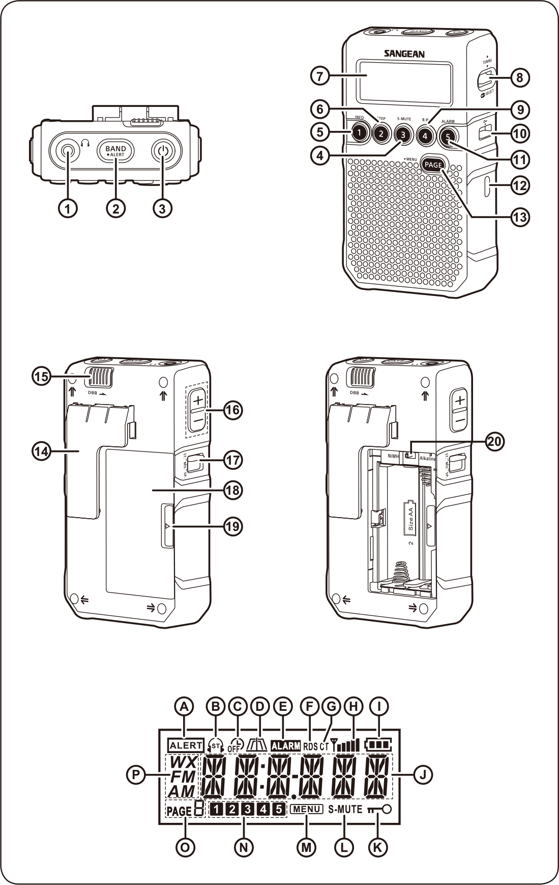

Sangean DT-800 한글 사용 설명서
영문 공식 매뉴얼 기반 전체 기능 한글 정리
📡 FM · AM 수신
💾 프리셋 메모리
⏰ RDS CT 자동 시계
⚙️ MENU 설정
🇰🇷 한국 권장 설정 포함
🖼️
기기 구성 및 명칭

🎛️ 버튼 / 스위치 (번호 순)
1
이어폰 / FM 안테나 단자
2
BAND 버튼 (밴드 전환)
3
전원 / 자동꺼짐 타이머 버튼
4
프리셋3 / S-MUTE 버튼
5
프리셋1 / INFO 버튼
6
프리셋2 / STEP(탐색간격) 버튼
7
LCD 디스플레이
8
TUNING / SELECT 버튼
9
프리셋4 / 대역폭(B.W.) 선택
10
잠금(LOCK) 스위치
11
프리셋5 / 알람 ON·OFF
12
USB 충전 단자
13
PAGE / MENU 버튼
14
벨트 클립
15
DBB ON·OFF (저음 부스터, 이어폰 전용)
16
볼륨 조절
17
ST / MO / SP 스위치 (스테레오·모노·스피커)
18
배터리 커버
19
배터리 커버 개방 스위치
20
배터리 종류 선택 스위치 (커버 내부)
📟 LCD 표시 (알파벳 순)
A
기상 경보 표시
B
스테레오 수신 표시
C
자동꺼짐 타이머 표시
D
협대역/광대역 표시
E
알람 표시
F
RDS 방송국명
G
CT (RDS 자동 시계)
H
수신 신호 세기
I
배터리 잔량
J
시각 및 라디오 주파수
K
잠금 표시
L
소프트 뮤트 표시
M
MENU 표시
N
프리셋 번호
O
프리셋 페이지
P
밴드 표시 (FM/AM)
🔌
AC 어댑터 사용법
연결 방법
- USB 케이블(Micro-B)을 DT-800 측면 USB 단자에 연결합니다.
- 반대쪽을 5V USB 어댑터 또는 컴퓨터 USB 포트에 연결합니다.
- 연결 즉시 전원이 공급되며, 라디오 사용 중에도 유지됩니다.
⚠️AC 어댑터 연결 중 알칼라인 배터리를 사용할 경우, 반드시 CHARGE 스위치를 Charge Off / Alkaline 위치로 설정하세요. 충전 전류가 흐르면 누액·파손 위험이 있습니다.
💡NiMH 충전식 배터리 사용 시 CHARGE 스위치를 Charge On / NiMH 위치로 두면 어댑터 연결 중 자동으로 배터리가 충전됩니다.
| 항목 | 사양 |
|---|---|
| 커넥터 | USB Micro-B |
| 입력 전압 | DC 5V |
| 권장 어댑터 | 5V 500mA 이상 USB 어댑터 또는 PC USB 포트 |
🔋
배터리 교체 — 알칼라인 (AA × 2)
- 라디오 후면 배터리 커버의 잠금 탭을 밀어 덮개를 엽니다.
- AA 알칼라인 배터리 2개를 극성(+/−)에 맞춰 삽입합니다.
- 배터리 커버를 닫아 잠금 탭이 고정되도록 합니다.
- CHARGE 스위치를 Charge Off / Alkaline 위치로 설정합니다.
⚠️CHARGE 스위치가 반드시 Charge Off / Alkaline 위치인지 확인하세요. NiMH 위치로 설정하면 알칼라인 배터리에 충전 전류가 흘러 파손될 수 있습니다.
배터리 잔량 표시
| LCD 표시 | 상태 | 조치 |
|---|---|---|
| E | 배터리 방전 (Empty) | 새 알칼라인 배터리로 즉시 교체 |
| 배터리 아이콘 깜빡임 | 잔량 부족 | 조속히 교체 권장 |
💡AA 알칼라인 기준 약 35시간(스피커) 또는 약 70시간(헤드폰) 연속 사용 가능합니다.
⚡
배터리 충전 — NiMH 충전식 (AA × 2)
- AA NiMH 충전식 배터리 2개를 극성(+/−)에 맞춰 삽입합니다.
- CHARGE 스위치를 Charge On / NiMH 위치로 설정합니다.
- USB 케이블로 5V 어댑터(또는 PC USB)에 연결하면 충전이 시작됩니다.
- 완충까지 약 7시간 소요됩니다. 충전 완료 후 어댑터를 분리하세요.
⚠️반드시 Charge On / NiMH 위치를 확인하세요. 알칼라인 배터리 삽입 상태에서 이 위치로 설정하면 배터리가 파손될 수 있습니다.
충전 오류 코드
| LCD 표시 | 의미 | 조치 |
|---|---|---|
| BT1-NG | 1번 배터리(+단자 쪽) 충전 이상 | 배터리 교체 또는 접촉 확인 |
| BT2-NG | 2번 배터리 충전 이상 | 배터리 교체 또는 접촉 확인 |
| CHECK | 배터리 용량 부족 또는 삽입 불량 | 재삽입 후 재시도, 이상 지속 시 교체 |
💡충전 중에도 라디오를 사용할 수 있으나 충전 시간이 다소 길어질 수 있습니다.
📡
라디오 수신 및 채널 탐색
스테레오 / 모노 / 스피커 선택
| 스위치 위치 | 사용 상황 | 설명 |
|---|---|---|
| SP | 스피커 청취 | 제공된 FM 유선 안테나를 이어폰 단자에 꽂고 SP 위치로 설정 |
| ST | FM 수신 양호 | 스테레오 출력. 신호가 충분할 때 사용 |
| MO | FM 신호 약할 때 | 모노 출력으로 전환해 잡음 감소 |
💡AM 수신 시 내장 페라이트 안테나 방향성이 있으므로, 수신이 약하면 라디오 본체를 천천히 돌려볼 것
자동 탐색 수신 (Seek Tuning)
- 전원 버튼 눌러 라디오 켜기
- BAND 버튼으로 FM 또는 AM 선택
- TUNING ▲ 또는 ▼ 누른 뒤 → SELECT 버튼으로 탐색 시작
- 다음 수신 가능한 방송국에서 자동 정지
- 원하는 방송국이 나올 때까지 반복
수동 탐색 수신 (Manual Tuning)
- 전원 켜기 → BAND 버튼으로 밴드 선택
- TUNING ▲ / ▼ 를 반복해서 눌러 원하는 주파수 맞추기
ATS 자동 저장 (Auto Tuning System)
⚠️ATS는 라디오가 켜진 상태에서만 작동합니다.
- 라디오 켜기 → BAND 버튼으로 FM 또는 AM 선택
- PAGE/MENU 버튼 길게 누르기 → 화면에 MENU 깜빡임
- TUNING ▲/▼ 로 ATS FM 또는 ATS AM 찾기
- SELECT 버튼 눌러 ATS 시작
- 신호 세기 순으로 방송국 자동 탐색 → 프리셋에 자동 저장
📌FM / AM 각각 최대 20개 (4페이지 × 5개) 저장 가능
주파수 범위
| 밴드 | 범위 | 탐색 간격 |
|---|---|---|
| FM | 87.50 ~ 108 MHz | 50 / 100 / 200kHz 선택 가능 |
| AM | 522 ~ 1710 kHz | 9kHz (한국·유럽) / 10kHz (북미) |
💾
프리셋 메모리 저장 / 불러오기
📋FM / AM 각각 4페이지 × 5개 = 최대 20개 저장 가능. 페이지 1~4, 프리셋 번호 1~5.
방송국 저장
- ATS / 자동 탐색 / 수동 탐색으로 원하는 방송국 맞추기
- PAGE 버튼 눌러 저장할 페이지 선택 (1~4 순환)
- 프리셋 버튼 1~5 중 하나를 길게 누르기
- 화면 숫자 깜빡임 멈추고 삐 소리 → 저장 완료
저장된 방송국 불러오기
- 라디오 켜기 → BAND 버튼으로 해당 밴드 선택
- PAGE 버튼으로 원하는 페이지 선택 (1~4)
- 프리셋 버튼 (1~5) 눌러 저장된 방송국 바로 청취
프리셋 위치 이동 (편집)
예시P1 → P5로 이동하려면: P1 불러오기 → 화면에 P1 깜빡임 → 프리셋5 버튼 길게 누르기 → 삐 소리 = 이동 완료
⚠️프리셋 삭제는 불가. 덮어쓰기만 가능합니다.
🔒
잠금 스위치 (Lock Switch)
가방이나 주머니에 넣을 때 버튼 오작동을 방지합니다.
| 동작 | 방법 | 화면 |
|---|---|---|
| 🔒 잠금 설정 | 라디오 오른쪽 잠금 스위치를 위로 올리기 | 자물쇠 🔒 아이콘 표시 |
| 🔓 잠금 해제 | 잠금 스위치를 아래로 내리기 | 자물쇠 아이콘 사라짐 |
💡잠금 상태에서는 전원 버튼을 포함한 모든 버튼이 비활성화됩니다.
🕐
시계 설정
수동 시계 설정
배터리 설치 또는 어댑터 연결 직후 화면에 시간이 깜빡이면 설정 모드로 자동 진입합니다.
- SELECT 버튼 누르기
- TUNING ▲/▼ 로 시(Hour) 선택
- SELECT 버튼으로 시 확정
- TUNING ▲/▼ 로 분(Minute) 선택
- SELECT 버튼으로 최종 확정 → 현재 시각 표시
자동 시계 설정 (RDS CT)
RDS CT를 지원하는 FM 방송국 수신 시 시각이 자동 동기화됩니다.
- PAGE/MENU 버튼 길게 누르기 → MENU 진입
- TUNING ▲/▼ 로 찾기 → SELECT
- TUNING ▲/▼ 로 선택 → SELECT 확정
- RDS CT를 지원하는 FM 방송국 수신 → 시각 자동 동기화
⚠️AUTO 설정 시 이후 수동 시계 조정이 불가합니다.
12시간 / 24시간 형식 변경
- MENU 진입 → TUNING ▲/▼ 로 찾기
- SELECT → TUNING ▲/▼ 로 또는 선택
- SELECT 버튼으로 확정
🔔
알람 설정 (ALMSET)
⚠️알람 설정 전 시계(CLKSET)가 먼저 설정되어 있어야 합니다.
알람 시각 설정
- MENU 진입 → 찾기 → SELECT
- TUNING ▲/▼ 로 알람 시(Hour) 선택 → SELECT 확정
- TUNING ▲/▼ 로 알람 분(Minute) 선택 → SELECT 확정
- 화면에 ALARM 아이콘 표시 → 설정 완료
알람 해제 및 취소
| 상황 | 방법 |
|---|---|
| 알람 울리는 중 끄기 | 전원 버튼 누르기 |
| 알람 설정 자체 취소 | MENU → ALMSET 진입 → 프리셋5(알람) 버튼 누르기 → ALARM 아이콘 사라짐 |
| 알람 ON·OFF 빠른 전환 | MENU 상태에서 프리셋5 버튼 누르기 |
➕
추가 기능 (MENU 상태 프리셋 버튼)
💡라디오 켜고 방송국 수신 중 → PAGE/MENU 버튼 길게 → MENU 아이콘 깜빡이면 아래 기능 사용 가능
| 버튼 | 기능명 | 설명 |
|---|---|---|
| 프리셋 1 | INFO | 현재 시각 → 알람 시각 → 라디오 주파수 → 방송국명(RDS) 순환 표시 |
| 프리셋 2 | STEP | 탐색 간격 변경 AM: 9k/10k → 1k 스텝 FM: 200k→100k→50k→10k 스텝 |
| 프리셋 3 | S-MUTE | 소프트 뮤트 ON/OFF — 방송국 사이 화이트노이즈 억제. 화면에 S-MUTE 아이콘 표시 |
| 프리셋 4 | B.W. | 대역폭 좁음(Narrow)/넓음(Wide) 전환 — 이웃 방송국 간섭 시 Narrow 선택 |
| 프리셋 5 | 알람 ON/OFF | 알람 활성화 / 비활성화 토글 |
💡설정 변경 후 PAGE/MENU 버튼을 다시 눌러 확정합니다.
자동 꺼짐 타이머 (TIM 90)
지정 시간 후 자동 꺼짐. 취침 청취에 유용합니다.
- MENU 진입 → → SELECT
- TUNING ▲/▼ 로 시간 선택: OFF · 15 · 30 · 45 · 60 · 90 · 120분
- SELECT 확정 → 화면에 타이머 아이콘 표시
💡타이머로 꺼진 후 계속 듣고 싶으면 전원 버튼을 누르면 됩니다.
🇰🇷
한국에서 권장하는 초기 설정
FM 주파수 범위
87–108 MHz
한국 FM 방송 표준
FM 탐색 간격
100kHz
한국 FM 채널 간격
AM 탐색 간격
9kHz
한국·아시아 AM 표준
시계 형식
24H
선호에 따라 선택
CLKSET
AUTO
KBS 등 RDS 지원 방송 수신 시 자동 동기화
스피커 청취 시
ST/MO/SP → SP
유선 안테나 이어폰 단자에 연결 후
📋
제품 사양
| 항목 | 사양 |
|---|---|
| 전원 | USB DC 5V (Micro-B 커넥터) |
| 배터리 | AA × 2 (알칼라인 1.5V 또는 NiMH 1.2V) |
| 배터리 수명 — 알칼라인 | 약 35시간 (스피커) / 약 70시간 (헤드폰) |
| FM 수신 범위 | 87.5 – 108 MHz |
| AM 수신 범위 | 522 – 1710 kHz (9kHz 스텝) / 520 – 1710 kHz (10kHz 스텝) |
| 헤드폰 임피던스 | 32 Ω |
| 동작 온도 | 0°C – 45°C |
| 크기 (W × H × D) | 약 120 × 68 × 17 mm |
| 무게 | 약 95 g (배터리 제외) |
ℹ️사양은 영문 공식 매뉴얼 기준이며, 실제 제품 및 생산 시기에 따라 일부 다를 수 있습니다.
Sangean DT-800 영문 공식 매뉴얼 기반 한글 정리 | 내용은 영문 매뉴얼 기준이며 실제 제품과 차이가 있을 수 있습니다.